| Cumulative threshold | Logistic threshold | Description | Fractional predicted area | Training omission rate |
|---|---|---|---|---|
| 1.000 | 0.014 | Fixed cumulative value 1 | 0.255 | 0.000 |
| 5.000 | 0.074 | Fixed cumulative value 5 | 0.148 | 0.004 |
| 10.000 | 0.145 | Fixed cumulative value 10 | 0.105 | 0.025 |
| 2.713 | 0.040 | Minimum training presence | 0.187 | 0.000 |
| 24.977 | 0.321 | 10 percentile training presence | 0.053 | 0.100 |
| 18.879 | 0.248 | Equal training sensitivity and specificity | 0.068 | 0.067 |
| 14.977 | 0.207 | Maximum training sensitivity plus specificity | 0.082 | 0.046 |
| 2.661 | 0.039 | Balance training omission, predicted area and threshold value | 0.188 | 0.000 |
| 10.825 | 0.156 | Equate entropy of thresholded and original distributions | 0.101 | 0.033 |


 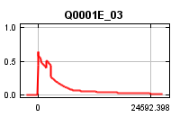
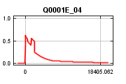
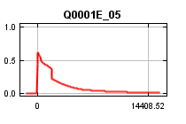
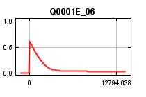
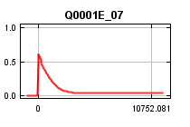
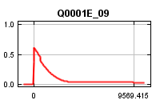
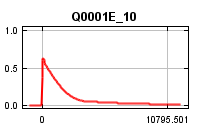
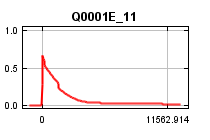
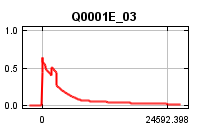
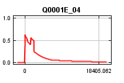
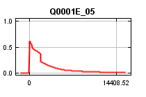
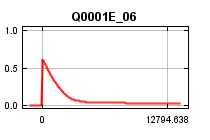
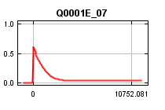
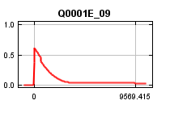
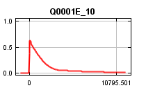
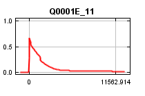
 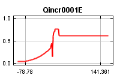
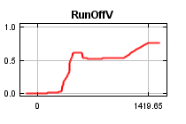
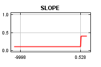
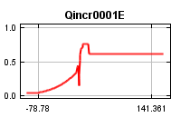
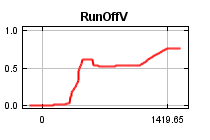
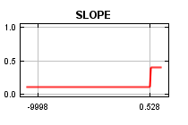
 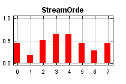
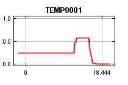
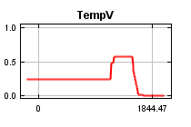
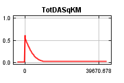
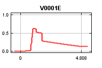
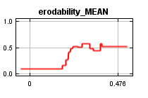
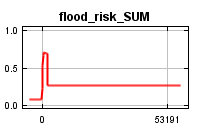
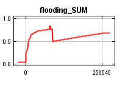
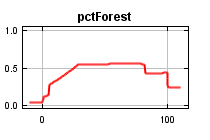
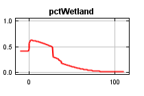
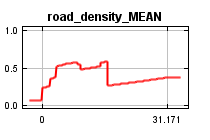
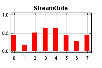
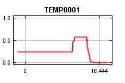
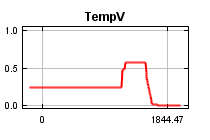
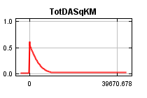
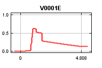
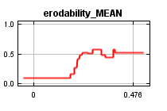
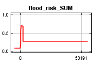
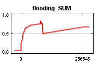
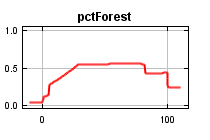
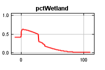
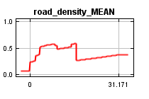
 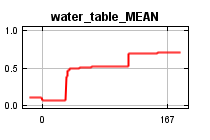
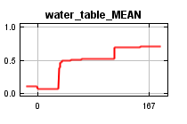
| Variable | Percent contribution | Permutation importance |
|---|---|---|
| V0001E | 20.5 | 1.7 |
| Pathlength | 12.8 | 14.4 |
| Q0001E_11 | 10.4 | 0.5 |
| NLCD_21 | 9.9 | 5.6 |
| flood_risk_SUM | 8.1 | 0.6 |
| NLCD90PC | 7.7 | 7.7 |
| TempV | 6.2 | 0 |
| Q0001E_08 | 3.4 | 4.7 |
| water_table_MEAN | 2.2 | 1.5 |
| NLCD11PC | 1.3 | 1.1 |
| Q0001E_12 | 1.3 | 0.1 |
| Q0001E_09 | 1.3 | 4.1 |
| erodability_MEAN | 1.1 | 0.5 |
| ShadedLength | 1.1 | 1.5 |
| LENGTHKM | 1 | 2.6 |
| StreamOrde | 0.9 | 0.2 |
| FCODE | 0.8 | 4.5 |
| PET0001 | 0.7 | 0 |
| NLCD21PC | 0.6 | 1 |
| NLCD52P | 0.5 | 0.7 |
| ArbolateSu | 0.5 | 0 |
| NLCD71PC | 0.5 | 0.6 |
| TEMP0001 | 0.4 | 0.6 |
| PPT0001 | 0.4 | 0 |
| NLCD_71 | 0.3 | 1 |
| NLCD52PC | 0.3 | 3.9 |
| PrecipV | 0.3 | 0.2 |
| pctWetland | 0.3 | 1.2 |
| NLCD22PC | 0.3 | 1.4 |
| NLCD41PC | 0.3 | 0.4 |
| RunOffV | 0.3 | 1.5 |
| NLCD_11 | 0.3 | 3.2 |
| NLCD31PC | 0.3 | 0.3 |
| NLCD43P | 0.3 | 1.2 |
| NLCD43PC | 0.2 | 0.7 |
| Q0001E_10 | 0.2 | 6.8 |
| NLCD31P | 0.2 | 0.4 |
| NLCD81P | 0.2 | 0.5 |
| NLCD_41 | 0.2 | 0.8 |
| Qincr0001E | 0.2 | 0.2 |
| NLCD22P | 0.2 | 1 |
| NLCD95P | 0.2 | 0 |
| NLCD42P | 0.1 | 0.4 |
| MinMonthly | 0.1 | 0.7 |
| NLCD_43 | 0.1 | 0.3 |
| MeanShadeLength | 0.1 | 1.2 |
| slope_MEAN | 0.1 | 1 |
| NLCD_82 | 0.1 | 0.4 |
| NLCD71P | 0.1 | 0.5 |
| Q0001E_01 | 0.1 | 0 |
| road_density_MEAN | 0.1 | 0.2 |
| NLCD_52 | 0.1 | 0.2 |
| SLOPE | 0.1 | 0.7 |
| NLCD82P | 0.1 | 0.1 |
| Q0001E_02 | 0.1 | 0.1 |
| NLCD_31 | 0.1 | 0.1 |
| NLCD_81 | 0.1 | 0.1 |
| NLCD41P | 0.1 | 0.6 |
| NLCD_23 | 0 | 0 |
| NLCD_24 | 0 | 0 |
| NLCD_95 | 0 | 0.5 |
| NLCD90P | 0 | 0.8 |
| pctForest | 0 | 0.2 |
| NLCD81PC | 0 | 0.2 |
| NLCD23PC | 0 | 0.2 |
| NLCD23P | 0 | 0 |
| NLCD_42 | 0 | 0.4 |
| NLCD24P | 0 | 0 |
| NLCD42PC | 0 | 0.6 |
| Q0001E_03 | 0 | 0.4 |
| NLCD24PC | 0 | 0 |
| Q0001E_07 | 0 | 3.8 |
| Q0001E_06 | 0 | 1.8 |
| NLCD11P | 0 | 5.1 |
| NLCD21P | 0 | 0.1 |
| NLCD82PC | 0 | 0 |
| NLCD_22 | 0 | 0 |
| flooding_SUM | 0 | 0.1 |
| AreaSqKM | 0 | 0 |
| NLCD12P | 0 | 0 |
| Q0001E | 0 | 0 |
| Q0001E_04 | 0 | 0 |
| Q0001E_05 | 0 | 0 |
| NLCD51PC | 0 | 0 |
| NLCD51P | 0 | 0 |
| TotDASqKM | 0 | 0 |
| NLCD72P | 0 | 0 |
| NLCD72PC | 0 | 0 |
| NLCD73P | 0 | 0 |
| NLCD73PC | 0 | 0 |
| NLCD74P | 0 | 0 |
| NLCD74PC | 0 | 0 |
| NLCD95PC | 0 | 0 |
| NLCD_90 | 0 | 0 |
| NLCD12PC | 0 | 0 |